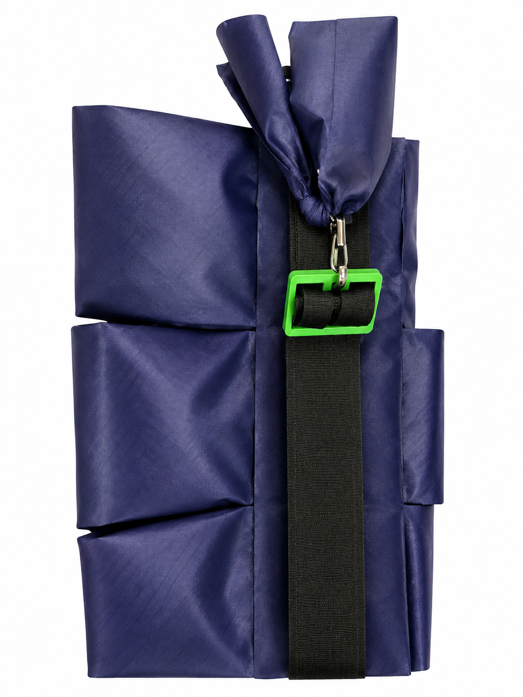

Soft Wearable Assistive Exosuit
Jul. 2024 – Sep. 2024

Soft sleeve prototype

Exosuit experimental setup
Overview
This project investigated soft and bioinspired design, modeling, and control approaches for wearable assistive systems.
System Development
I contributed to system-level improvements of the wearable robotic platform with a focus on practical usability and comfort.
System-Level Improvements
I implemented system-level improvements to make the wearable platform more comfortable and practical for users, with particular attention to fit, wearability, and overall user experience.